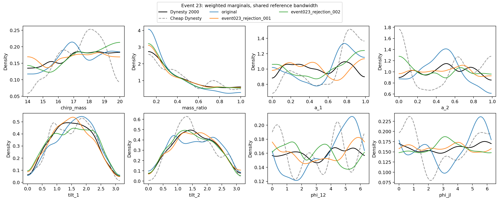
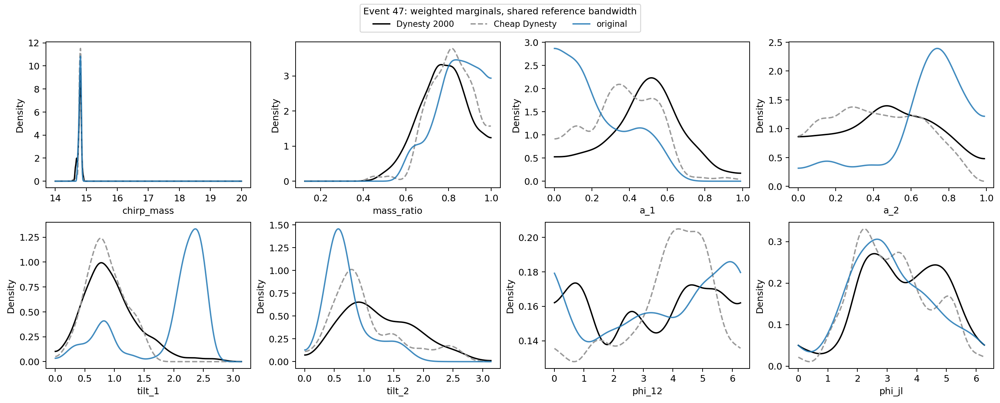

Events 23 and 47: sampling diagnostics
6 November 2026 · Same cheap training data; independent reference held out.
Full campaign rerun on hold
Event 47 failed the fixed-walk, no-retry control. All original results are preserved. The 100-event NISMO snapshot remains exploratory and does not establish a posterior improvement.
Replaying all 4,024 positive-weight saved points found no likelihood, prior, proposal-density or weight-bookkeeping discrepancy above numerical tolerance. Recovery selects successful walks after failures, which can bias endpoints. The safety patch makes retries opt-in and verifies which code checkout is loaded; it does not establish that poor mixing is resolved.
Independent controls
| Event | Run | ΔlnZ | JSD | Likelihood calls | Outcome |
|---|---|---|---|---|---|
| 23 | original | +0.104 | 0.00729 | 86140 | stopping threshold reached |
| 47 | original | +0.954 | 0.13782 | 454210 | stopping threshold reached |
| 23 | event023_rejection_001 | +0.081 | 0.00103 | 40150 | stopping threshold reached |
| 23 | event023_rejection_002 | +0.118 | 0.00231 | 55249 | stopping threshold reached |
| 47 | event047_fixed1000_001 | — | — | 343319 | failed |
Event 23's exact independent-rejection controls took 49 and 70 seconds, with zero retries. Event 47 used 1,000 fixed proposals per walk, no adaptation and no retries. It stopped at replacement 571 after 4/5 required accepted moves, using 343,319 likelihood calls in 5.6 minutes. No posterior was exported from that failure.
Cheap/reference JSD: 0.01029 for event 23; 0.03570 for event 47. Completed controls retain the original normalized weights. Statistical evidence errors and full cost including each cheap pilot are available in the report and JSON; statistical errors do not include sampler/proposal bias. Reference posteriors retain 1,000 draws, so small shape differences contain finite-sample uncertainty.
These controls suggest finite-walk sampling error in event 23, but do not isolate the cause of event 47's mismatch. A validated difficult-event control and seed stability checks are required before the full rerun.
Event 23: weighted marginals

Event 47: weighted marginals

Event 23: corner overlays
Independent control, sampling seed 20261106 · Repeat, sampling seed 20261107


Full audit, uncertainty, settings and reproduction commands · Download comparison data and audit receipts